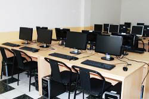

Computer Labs
The staff maintain several instructional computing laboratories in B-Block which are open to students in the department. These labs may be reserved by members of the IAAU for instructional purposes. When not in use for instruction, these classrooms are open as walk-in computing facilities.
The Electronic (Lab-1)
 The Electronic Lab is operated by the Department of
Industrial Electronics under the Faculty of New technology, and is
used for laboratory classes and research, personal study.
The Electronic Lab is operated by the Department of
Industrial Electronics under the Faculty of New technology, and is
used for laboratory classes and research, personal study.
Specifications
Electronic Laboratory is equipped with 1 computer, a video
projector, a marker board,soldering equipment, 0-24V Power supplies,
oscillators, TTL & CMOS Intergrated Circuits, 1 Ohm >> 2 Mohm
resisteors, 0.1 mF >> 470 mF capasitors, Transistors bc 547, 109,
2n2222, lm317, Diods, Emi Tools.
The Mathematics (Lab-2)
 Applied Mathematics Lab is operated by the
Department of Applied Mathematics under the Faculty of New
technology, and is used for laboratory classes and research,
personal study.
Applied Mathematics Lab is operated by the
Department of Applied Mathematics under the Faculty of New
technology, and is used for laboratory classes and research,
personal study.
Specifications
Math Lab is equipped with 21 computers, a video projector and a
marker board. There are 1 server and 20 client computers, running on
Windows 7 with different kinds of network based software development
programs such as Matlab, Maple, Java, Delphi, Visual C, Python etc.
Networking Lab (Lab-3)

The Network Lab is operated by the Department of
Computer Engineering under the Faculty of New technology, and is
used for laboratory classes and research, personal study.
Specifications
Network Laboratory is equipped with 25 computers, a video projector
and a marker board. There are 1 server and 24 client computers,
running on Windows 7 with different kinds of network based software
development programs such as Eclipse, Delphi, VMware, Visual Studio,
etc.
Software Development Lab (Lab-4)
 The Software Development Lab is operated by the
Department of Computer Engineering under the Faculty of New
technology, and is used for laboratory classes and research,
personal study.
The Software Development Lab is operated by the
Department of Computer Engineering under the Faculty of New
technology, and is used for laboratory classes and research,
personal study.
Specifications
It is equipped with 25 computers, projector and a marker board. All
machines are running under Linux operating system, Fedora. Students
mostly spend time programming. There are 1 server and 24 client
computers, with all precompiled software which comes with the OS
itself.
Electronics Lab (Lab-6)
 The Electronics Lab is operated by the Department
of Industrial Electronics under the Faculty of New technology, and
is used for laboratory classes and research, personal study.
The Electronics Lab is operated by the Department
of Industrial Electronics under the Faculty of New technology, and
is used for laboratory classes and research, personal study.
Specifications
Electronic Laboratory is equipped with 9 computers, a video
projector and a marker board.
The lab supports more advanced experiments in signals and systems,
communications, electromagnetism, and photonics. There are 31
stations in the Electronics Lab. Each station consists of: Lenovo
ThinkCentre workstation running Windows 7, Agilent Multimeter
34410A, Agilent triple DC power supply E3631A, Agilent Function
Generator 33120A, Oscilloscopes, 15 stations include HP/Agilent
MSO6012A mixed signal oscilloscope, 16 stations include LeCroy
WaveSurfer 422 touch-screen oscilloscope, All devices on each
station are connected to the computer.
The Smart Class
The Smart Class is operated by the Department of
Computer Science under the Faculty of New Technologies, used for
Distance Learning, Online Seminars, Collaboration courses and
Teleconferences.
Specifications
Smart Class is equipped with 1 laptop, 1 smart board, Short-distance
projector, LED TV, Web IP Camera for teleconferences, Microphones,
and sound system.
Lab policies and conditions of use
1. General Computer Lab Policy is applied. Refer to
link
2. The Network Lab is available only to Staff, Students of Faculty
of New Technologies and official Visitors.
3. Anyone else who needs to use the Network Lab requires taking
permission from Head of Computer Science Department.